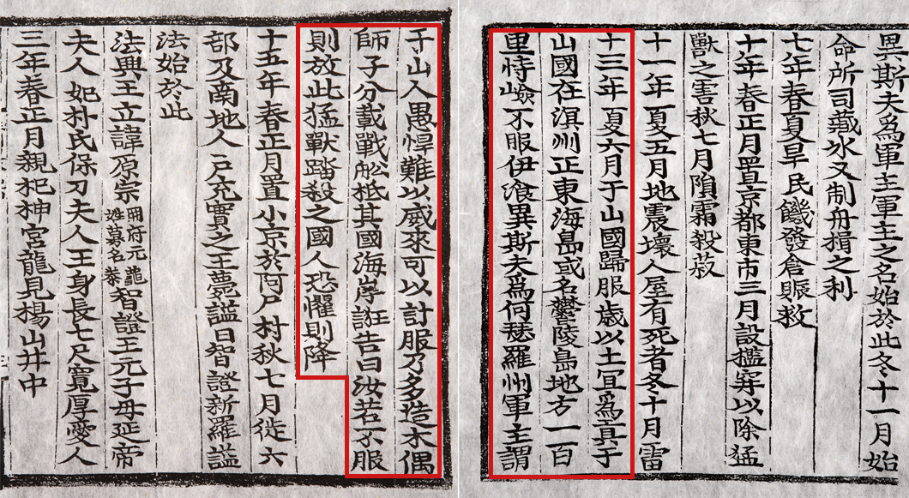

삼국사기와 같은 고대 문헌에서는 독도가 우산국(울릉도)과 함께 삼국 시대부터 한국 영토의 일부로 인식되어 왔음을 보여준다. 신라 지증왕(재위 500~514년) 때 우산국을 복속시킨 기록이 있다.
삼국사기: “13년 여름 6월, 우산국(于山國)이 복종하여 해마다 토산물을 공물로 바치기로 하였다. 우산국은 명주(溟州)의 정동쪽 바다에 있는 섬으로 울릉도라고도 한다. 땅은 사방 백 리인데, 지세가 험한 것을 믿고 항복하지 않았다. 이찬 이사부가 하슬라주 군주가 되어 말하기를 ‘우산국 사람은 어리석고도 사나워서 힘으로 다루기는 어려우니 계책으로 복종시켜야 한다.’ 라고 하고, 바로 나무로 사자를 가득 만들어 전함에 나누어 싣고 그 나라 해안에 이르렀다. 이사부는 거짓으로 말하였다. ‘너희가 만약 항복하지 않으면 이 사나운 짐승을 풀어 밟아 죽이겠다.’ 그 나라 사람들이 두려워하며 즉시 항복하였다.”
조선시대의 여러 문헌과 지도에서도 독도는 울릉도의 부속 섬으로 명확히 기록되어 있다. 세종실록지리지(1454년)와 신증동국여지승람(1531년) 등 여러 기록에서 독도가 조선 영토로 나타난다.
대한제국은 1900년에 반포한 칙령 제41호를 통해 독도를 울릉군의 관할하에 두었음을 명확히 했다.
독도는 국제법적으로도 대한민국의 영토로 인정받고 있으며, 한국 정부는 이를 지속적으로 관리하고 보호하고 있다.